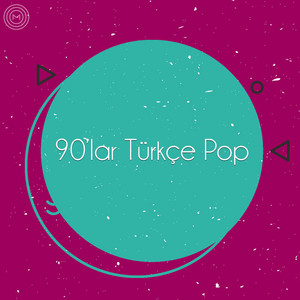

Tarihin en iyi müzik jenerasyonu!
Serdar Ortaç, Grup Vitamin, Sezen Aksu...
90'lar
Tarihin en iyi müzik jenerasyonu!
Serdar Ortaç, Grup Vitamin, Sezen Aksu...
| # | Sanatçı | Şarkı Adı | Süre |
|---|---|---|---|
| 1 | Sezen Aksu | Şinanay | 4:30 |
| 2 | Kenan Doğulu | İ Doğuna Bakarım | 4:00 |
| 3 | Tarkan | Spoiled | 3:45 |
| 4 | Levent Yüksel | One More (Remix) | 4:15 |
| 5 | İzel, Ercan | You Should Return | 4:45 |
| 6 | Sertab Erener | Unutma Beni | 4:20 |
| 7 | Kenan Doğulu | Çakkıdı | 3:50 |
| 8 | Sezen Aksu | İstanbul | 4:10 |
| 9 | MFÖ | Hadi Bakalım | 4:05 |
| 10 | Grup Vitamin | Yok Gerek | 4:25 |
| 11 | Sezen Aksu | Uptown Funk | 4:15 |
| 12 | Kenan Doğulu | Çakkıdı | 3:50 |
| 13 | Sezen Aksu | İstanbul | 4:10 |
| 14 | MFÖ | Hadi Bakalım | 4:05 |
| 15 | Grup Vitamin | Yok Gerek | 4:25 |
| 16 | Sezen Aksu | Uptown Funk | 4:15 |
| 17 | Kenan Doğulu | Çakkıdı | 3:50 |
| 18 | Sezen Aksu | İstanbul | 4:10 |
| 19 | MFÖ | Hadi Bakalım | 4:05 |
| 20 | Grup Vitamin | Yok Gerek | 4:25 |
| 21 | Sezen Aksu | Uptown Funk | 4:15 |
| 22 | Kenan Doğulu | Çakkıdı | 3:50 |
| 23 | Sezen Aksu | İstanbul | 4:10 |
| 24 | MFÖ | Hadi Bakalım | 4:05 |
| 25 | Grup Vitamin | Yok Gerek | 4:25 |
| 26 | Sezen Aksu | Uptown Funk | 4:15 |
| 27 | Kenan Doğulu | Çakkıdı | 3:50 |
| 28 | Sezen Aksu | İstanbul | 4:10 |
| 29 | MFÖ | Hadi Bakalım | 4:05 |
| 30 | Grup Vitamin | Yok Gerek | 4:25 |
| 31 | Sezen Aksu | Uptown Funk | 4:15 |
| 32 | Kenan Doğulu | Çakkıdı | 3:50 |
| 33 | Sezen Aksu | İstanbul | 4:10 |
| 34 | MFÖ | Hadi Bakalım | 4:05 |
| 35 | Grup Vitamin | Yok Gerek | 4:25 |